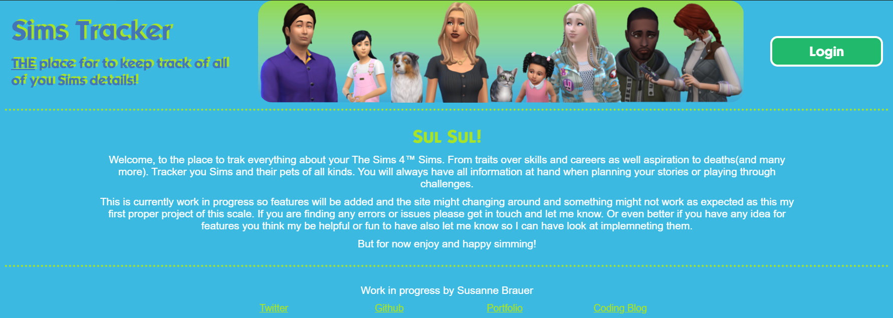

Todays plan:
- Course work on local developing and website deployment☑
- HTML/CSS for Sims tracker landing page☑
- Layout the Sims Tracker household summary☐
- Layout the Sims Tracker single Sim summary☐
- further style improvement on Blog☐
- Update log☑
Today's Progress: First "free"(or local) Codecademy project and proper start on Sims Tracker project.
Thoughts: I have done the chapters on my course that I planned to do, but they were mostly things I was already aware of, but in the end there was a little project in create a website as per a give example and specs which was a nice exercise and I will link the result in the link here.
I have done more work on the Sims Tracker landing page and but I will leave the place holder page in place at the domain until some actual functionality is in place there. So if you want to follow along with the progress I will post updates and pictures here or you can follow along on my github account. So this what hte landing page looks like now. The little banner oin the header is not ideal just yet but I did not want to spend a ton of time on the picture and get to working on the code.The next step putting a sign up form below then this piece will be done in its static form and I can move on to the next part.

Yes I said a sign up form and yes there is a login button at the top right there. I think the actual functionality for those is still realatively far in the future, but I do want this to be something people can actually use so it'll need some kind of account system and database behind it. While this is somewhat intimidating at this point in time, learning how to make that work is something I really look forward to and part of why I chose this project.
So Overall I would have liked to get a bit more work done on sprucing up this blog, but sometimes the days are just not long enough. SO I didn't get everything done but I'm happy with the things I did get done.
Links to work:
Sims Tracker, CodeCademy Project Dasmoto
Course Completion Status at the end of the day: 8%